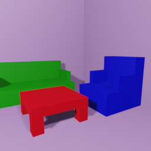
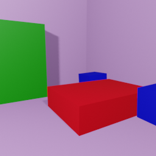
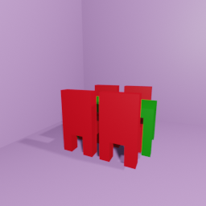
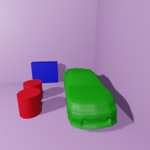
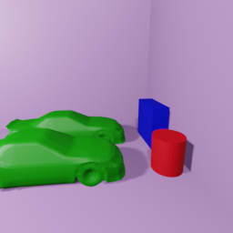
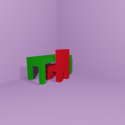
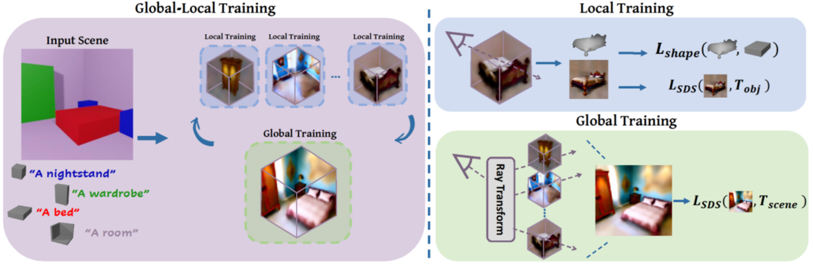

Results
A Baroque living room
A futuristic living room
A Moroccan living room

A futuristic bedroom
An Asian bedroom
A kids bedroom

A Futuristic dining room
A Baroque dining room
A Moroccan dining room
Post Training Editing

Original generated scene

Placement editing
Original generated scene

Placement editing
Single Object NeRFs Composing The Scene
A Baroque bedroom
A Baroque bed
A Baroque nightstand
A Baroque wardrobe
How does it work?
